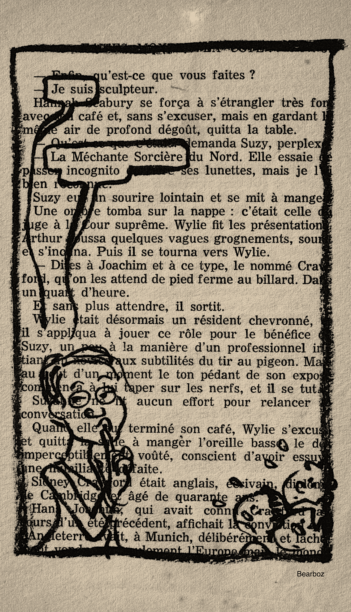
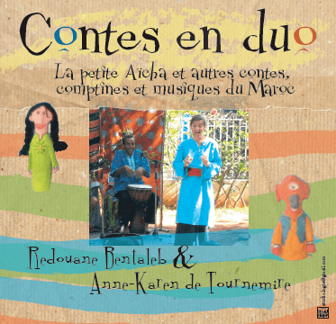
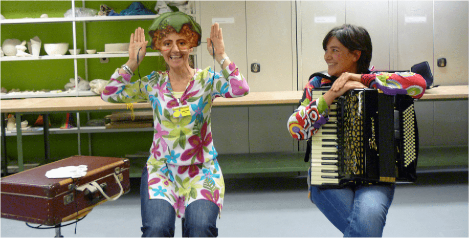

Naissance à La Rochelle le 10 mars 1970.
Études littéraires à Paris (khâgne, maîtrise lettres modernes, DEA théâtre/arts du spectacle).
Vies successives au Havre, à Dunkerque, Vientiane au Laos, Montargis, Loches en Touraine, Casablanca, Luxembourg, Bruxelles.
Formation au conte au CLIO à Vendôme (Conservatoire contemporain de Littérature Orale, atelier Fahrenheit 451 avec Bruno de la Salle, 2000-2003).
Chant : chorale polyphonique de Casablanca, chorale mixte du Conservatoire de Luxembourg, chœur "Home sweet home" (Luxembourgeois, réfugiés et résidents étrangers, avec Camille Kerger), stages à l'INECC (Institut Européen de Chant Choral).
Travail en duo : au Maroc avec Redouane Bentaleb, musicien et danseur et Nathalie Logié, illustratrice ; au Luxembourg avec Lydie Piéplu, danseuse et chorégraphe, Jean Ribouillault, mime et multi-instrumentiste, Eleonora Pasti, plasticienne et accordéoniste, Arian Lishi, musicien.
Contes, spectacles et ateliers dans les écoles, crèches, bibliothèques, prisons, hôpitaux…
Visites contées dans les musées d'Histoire et d’Art de la Ville de Luxembourg à l’origine du CD enregistré au studio Bamhaus (Pimpampel, les histoires ont des ailes).
Marionnettes : Stages à Bruxelles (My Puppet Project) et Paris (théâtre Mouffetard avec Brice Coupey).
Septembre 2019 : retour en France, entre Paris et Loches.
Contes et comptines pour les petites oreilles
(crèches,
écoles maternelles,
structures petite enfance)
Des histoires à répétitions, des comptines, chansons, des histoires pour avoir un peu peur, pour s'amuser, pour compter, des histoires avec 3 poules, 3 ours, 3 éléphants, 3 boucs, et toutes sortes d'animaux, une moufle qui explose, une carotte à arracher, une petite chose qui pousse sous la terre, des histoires au fil du temps et des saisons...

Contes d'Asie du Sud-Est
(Laos, Vietnam, Cambodge, Thaïlande)
Contes du Maghreb
(Maroc, monde arabe et berbère)

Contes d’Europe
(Grimm, Andersen, Perrault, Calvino)

7 contes avec
Eleonora Pasti (accordéon)
Studio Bamhaus, Luxembourg, 2016

La petite souris qui va à Marrakech
Contes, comptines et musiques du Maroc
avec Redouane Bentaleb (guitare, jembé, guembri)
Studio Sigma à Casablanca en juin 2007

La petite souris qui va à Marrakech
avec Redouane Bentaleb
Festival EPOS Vendôme 2007

Trop belle... à partir d'Amour et Psyché d'Apulée
Spectacle de conte et danse en duo avec Lydie Piéplu
Théâtre 10 Luxembourg, 2011 (photo citrouillet)

Visite contée en duo avec Jean Ribouillault
de l'exposition Merci de ne pas nourrir
Villa Vauban Luxembourg 2014

Aladin au Théâtre 10 de Luxembourg en 2012

avec Eleonora Pasti
au Centre Pénitentiaire de Luxembourg en 2015

Voyage en Asie du sud-est
Cabanes-Festival de Moselle 2014 à Sierck-les-Bains
Contes dans le jardin avec Eleonora Pasti
Villa Plage 2015, Musée d'Art de la Ville de Luxembourg
Family Play Day avec Arian Lishi au Cercle-Cité à Luxembourg
le 1er octobre 2016
Visite contée de l’exposition Images d’un monde serein
Villa Vauban Luxembourg 2017

au Citim

au Citim
❮
❯